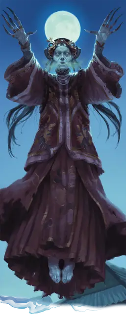

Цзянши
Jiangshi
Средняя Нежить, Принципиальная Злая

Класс Защиты 16 Инициатива +0 (10)
Хиты 119 (14к8 + 56)
Скорость 20 футов, Полёта 5 футов (парит)
| мод | спас | ||
|---|---|---|---|
| СИЛ | 18 | +4 | +4 |
| ЛОВ | 3 | −4 | −4 |
| ТЕЛ | 18 | +4 | +8 |
| мод | спас | ||
|---|---|---|---|
| ИНТ | 17 | +3 | +7 |
| МДР | 14 | +2 | +6 |
| ХАР | 12 | +1 | +5 |
Иммунитеты Яд; Испуганный, Истощение, Отравленный, Очарованный, Парализованный
Чувства Тёмное зрение 120 футов, пассивное Восприятие 16
Языки Общий плюс ещё три других языка
Опасность 9 (5 000 опыта; БВ +4)
Особенности
Слабости цзянши. Цзянши обладает следующими слабостями:
Боязнь собственного отражения. Если цзянши видит собственное отражение, он немедленно использует Реакцию (если она доступна) для того, чтобы переместиться как можно дальше от отражения.
Чувствительность к священным символам. Когда цзянши носит Священный символ или касается его, он теряет Иммунитет к состоянию Испуганный и автоматически проваливает спасброски на избежание или окончание состояния Испуганный.
Действия
Мультиатака. Цзянши совершает три атаки Размашистым ударом и использует Поглощение энергии.
Размашистый удар. Бросок рукопашной атаки: +8, досягаемость 5 фт. Попадание: 13 (2к8 + 4) Дробящего урона.
Поглощение энергии. Спасбросок Телосложения: Сл 16, одно видимое цзянши существо в пределах 30 футов от него. Провал: 18 (4к8) Некротического урона. Успех: Только половина урона. Провал или успех: Цзянши восстанавливает Хиты в размере нанесённого Некротического урона; его Скорость полёта увеличивается на 20 футов до конца его следующего хода, и он может использовать своё Бонусное действие Голодная спешка.Гуманоид, чьи Хиты опущены до 0 этим уроном, в конце хода цзянши восстаёт как управляемое этим цзянши Умертвие. Если это умертвие убьёт Гуманоида своим действием Вытягивание жизни, оно спустя 5 дней превращается в независимого Цзянши.
Бонусные действия
Голодная спешка (требуется Поглощение энергии). Цзянши совершает действие Рывок.
Перевоплощение. Цзянши либо перевоплощается в Зверя Среднего или Маленького размера, в Гуманоида или в Нежить, либо возвращается в истинную форму. Его статистика, кроме размера, не меняется в зависимости от формы. Снаряжение, которое он носит или несёт, не трансформируется.
Бонус мастерства +4
Среда обитания Любая
Сокровища Реликварные
Цзянши
Мстительный, высасывающий жизненные силы труп
Когда душа оказывается запертой в собственном мёртвом теле, её горечь способна оживить труп, порождая цзянши. Эти мстительные мертвецы преследуют своих потомков, сея ужас и требуя расплаты за обиды или пренебрежение погребальными обрядами, из-за которых они и восстали. Трупное окоченение крепко сковывает конечности цзянши: руки остаются неестественно вытянутыми, а походка — жёсткой и неуклюжей. Эта черта вкупе со способностью летать закрепила за ними прозвище «прыгающие вампиры».
Днём цзянши прячутся в гробницах и заброшенных руинах, скрываясь от глаз живых. С наступлением ночи они выходят наружу, чтобы высасывать жизнь из тех, кто осмеливается бродить во тьме. Гуманоид, убитый цзянши, восстаёт в виде голодного до жизненной силы трупа. Дай ему шанс утолить эту жажду — и он тоже может превратиться в нового цзянши.